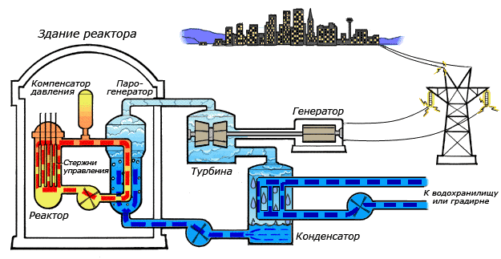

Атомная электростанция
А́томная электроста́нция (АЭС) ядерная установка для производства энергии в заданных режимах и условиях применения,
располагающаяся в пределах определённой проектом территории,
на которой для осуществления этой цели используется ядерный реактор (реакторы) и комплекс необходимых систем, устройств,
оборудования и сооружений с необходимыми работниками (персоналом) (НП-001)
Принцип действия

На рисунке показана схема работы атомной электростанции с двухконтурным водо-водяным энергетическим реактором.
Энергия, выделяемая в активной зоне реактора, передаётся теплоносителю первого контура. Далее теплоноситель поступает в теплообменник (парогенератор),
где нагревает до кипения воду второго контура. Полученный при этом пар поступает в турбины, вращающие электрогенераторы.
На выходе из турбин пар поступает в конденсатор, где охлаждается большим количеством воды, поступающим из водохранилища.
Компенсатор давления представляет собой довольно сложную и громоздкую конструкцию, которая служит для выравнивания колебаний давления в контуре во время работы реактора,
возникающих за счёт теплового расширения теплоносителя. Давление в 1-м контуре может доходить до 160 атмосфер (ВВЭР-1000).
Помимо воды, в различных реакторах в качестве теплоносителя и охладителя могут применяться также расплавы металлов: натрий, свинец, эвтектический сплав свинца с висмутом
и др. Использование жидкометаллических теплоносителей позволяет упростить конструкцию оболочки активной зоны реактора
(в отличие от водяного контура, давление в жидкометаллическом контуре не превышает атмосферного), избавиться от компенсатора давления.
Общее количество контуров может меняться для различных реакторов, схема на рисунке приведена для реакторов типа ВВЭР (Водо-водяной энергетический реактор).
Реакторы типа РБМК (Реактор большой мощности канального типа) использует один водяной контур, реакторы на быстрых нейтронах — два натриевых и один водяной контуры,
перспективные проекты реакторных установок СВБР-100 и БРЕСТ предполагают двухконтурную схему, с тяжелым теплоносителем в первом контуре и водой во втором.
В случае невозможности использования большого количества воды для конденсации пара вместо использования водохранилища вода может охлаждаться
в специальных охладительных башнях (градирнях), которые благодаря своим размерам обычно являются самой заметной частью атомной электростанции.
История
Попытки использовать управляемую ядерную реакцию для производства электричества начались в 1940-х годах в нескольких странах.
В СССР во второй половине 40-х гг., ещё до окончания работ по созданию первой советской атомной бомбы (её испытание состоялось 29 августа 1949 года),
советские учёные приступили к разработке первых проектов мирного использования атомной энергии, генеральным направлением которого стала электроэнергетика.
В 1948 году по предложению И. В. Курчатова и в соответствии с заданием ВКП и правительства начались первые работы по практическому
применению энергии атома для получения электроэнергии.
3 сентября 1948 года впервые удалось запитать электроприборы с помощью электричества, полученного на графитовом реакторе X-10 (США).
В мае 1950 года в городе Обнинске, расположенном в Калужской области, началось строительство Обнинской АЭС.
В том же 1950 году в США был создан реактор EBR-I[en] недалеко от города Арко, штат Айдахо. Данный реактор 20 декабря 1951 года в ходе эксперимента выработал
пригодное для использования электричество мощностью 800 Вт. После этого мощность реактора была повышена для обеспечения электроэнергией станции,
на которой находился реактор. Это даёт право называть данную станцию первой экспериментальной АЭС, но при этом она не была подключена к энергетической сети.
Обнинская АЭС мощностью 5 МВт была запущена 27 июня 1954 года в СССР. Она стала первой в мире атомной электростанцией, подключённой к общей электрической сети,
хотя и производила электричество не в промышленных масштабах. В 1958 году была введена в эксплуатацию 1-я очередь Сибирской АЭС мощностью 100 МВт,
впоследствии полная проектная мощность была доведена до 600 МВт. В том же году развернулось строительство Белоярской промышленной АЭС, а 26 апреля 1964 года
генератор 1-й очереди дал ток потребителям. В сентябре 1964 года был пущен 1-й блок Нововоронежской АЭС мощностью 210 МВт.
Второй блок мощностью 365 МВт запущен в декабре 1969 года. В 1973 году запущен первый блок Ленинградской АЭС[значимость факта?].
За пределами СССР первая АЭС промышленного назначения мощностью 46 МВт была введена в эксплуатацию в 1956 году в Колдер-Холле (Великобритания).
Через год в США вступила в строй АЭС Шиппингпорт мощностью 60 МВт. В 1959 году свою первую АЭС запустила Франция,
1961 — Германия, 1962 — Канада, 1964 — Швеция, 1966 — Япония.
В 1976 году начались строительные работы на рекордном за всю историю атомной энергетики числе новых реакторов, 44 единицы.
Годом ранее Международное агентство по атомной энергии (МАГАТЭ) выпустило прогноз, согласно которому
к 2000 году суммарная мощность АЭС во всем мире достигнет 4000 ГВт или даже 7000 ГВт. Оценка оказалась завышенной в 10 раз.
В 1979 году произошла серьёзная авария на АЭС Три-Майл-Айленд, после чего США постепенно прекратили строительство атомных реакторов.
К идее введения новых ядерных мощностей вернулась администрация Джорджа Буша младшего в начале 2000-х годов.
Существовали планы серийного строительства реакторов третьего поколения, получившие неофициальное название «атомного ренессанса».
На 2016 год четыре таких реактора строятся.
В 1984 и 1985 годах рекордное число реакторов было введено в эксплуатацию, 33 единицы в каждом году. В 1986 году — масштабная катастрофа на Чернобыльской АЭС,
которая, помимо непосредственных последствий, серьёзно отразилась на всей ядерной энергетике в целом. Она вынудила специалистов всего мира пересмотреть проблему безопасности АЭС и
задуматься о необходимости международного сотрудничества в целях повышения безопасности АЭС. Под влиянием чернобыльской катастрофы Италия провела референдум, на котором большинство высказалось за закрытие АЭС страны. В результате, в 1990-х Италия прекратила эксплуатировать атомные станции.
15 мая 1989 года на учредительной ассамблее в Москве, было объявлено об официальном образовании Всемирной ассоциации операторов атомных электростанций (англ. WANO), международной профессиональной ассоциации, объединяющей организации, эксплуатирующие АЭС, во всём мире. Ассоциация поставила перед собой амбициозные задачи по повышению ядерной безопасности во всём мире, реализуя свои международные программы[6].
К концу 80-х годов темпы строительства атомных станций существенно замедлились. Тем не менее, в 1996 году доля атомной энергетики во всемирной генерации электричества достигла своего пика — 17,6 %.
Большое влияние на атомную энергетику оказала катастрофа на АЭС Фукусима-1, произошедшая в марте 2011 года в Японии. Она возникла в результате воздействия на АЭС сильного землетрясения и последовавшего за ним цунами.
Достоинства и недостатки
Главное преимущество — практическая независимость от источников топлива из-за небольшого объёма используемого топлива. Например 54 тепловыделяющих сборки общей массой 41 тонна на один энергоблок с реактором ВВЭР-1000 в 1—1,5 года (для сравнения, Троицкая ГРЭС мощностью 2000 МВт сжигает за сутки два железнодорожных состава угля). Расходы на перевозку ядерного топлива, в отличие от традиционного, минимальны. В России это особенно важно в Европейской части, так как доставка угля из Сибири слишком дорога.
Огромным преимуществом АЭС является её относительная экологическая чистота. На ТЭС суммарные годовые выбросы вредных веществ, в которые входят сернистый газ, оксиды азота, оксиды углерода, углеводороды, альдегиды и золовая пыль, на 1000 МВт установленной мощности составляют от примерно 13 000 тонн в год на газовых и до 165 000 тонн на пылеугольных ТЭС. Подобные выбросы на АЭС возникают в редких случаях задействования резервных дизельных генераторов. ТЭС мощностью 1000 МВт потребляет 8 миллионов тонн кислорода в год для окисления топлива, АЭС же не потребляют кислорода[17].
Кроме того, больший удельный (на единицу произведённой электроэнергии) выброс радиоактивных веществ даёт угольная станция. В угле всегда содержатся природные радиоактивные вещества, при сжигании угля они практически полностью попадают во внешнюю среду. При этом удельная активность выбросов ТЭС в несколько раз выше, чем для АЭС.
Единственный фактор, в котором АЭС уступают в экологическом плане традиционным КЭС — тепловое загрязнение, вызванное большими расходами технической воды для охлаждения конденсаторов турбин, которое у АЭС несколько выше из-за более низкого КПД (не более 35 %). Однако этот фактор важен для водных экосистем, а современные АЭС в основном имеют собственные искусственно созданные водохранилища-охладители или вовсе охлаждаются градирнями. Также некоторые АЭС отводят часть тепла на нужды отопления и горячего водоснабжения городов, что снижает непродуктивные тепловые потери.
Существуют действующие и перспективные проекты по использованию «лишнего» тепла в энергобиологических комплексах (рыбоводство, выращивание устриц, обогрев теплиц и пр.). Кроме того, в перспективе возможно осуществление проектов комбинирования АЭС с ГТУ, в том числе в качестве «надстроек» на существующих АЭС, которые могут позволить добиться аналогичного с тепловыми станциями КПД[20][21][22][23].
Для большинства стран, в том числе и России, производство электроэнергии на АЭС не дороже, чем на пылеугольных и тем более газомазутных ТЭС. Особенно заметно преимущество АЭС в стоимости производимой электроэнергии во время так называемых энергетических кризисов, начавшихся с начала 70-х годов. Падение цен на нефть автоматически снижает конкурентоспособность АЭС.
Затраты на строительство АЭС разнятся в зависимости от проекта. По оценкам 2007 года, составленным на основе реализованных в 2000-х годах проектов, ориентировочно равны 2300 $ за кВт электрической мощности, эта цифра может снижаться при массовости строительства (для ТЭС на угле 1200 $, на газе — 950 $). Прогнозы 2012 года на стоимость проектов, осуществляемых в настоящее время, сходятся на цифре 2000 $ за кВт (на 35 % выше, чем для угольных, на 45 % — газовых ТЭС)[25]. По состоянию на 2018 год российские проекты на основе российских ВВЭР-1000/1200 обходятся примерно в 140 000 руб ($2200) за кВт установленной мощности, зарубежные проекты на основе российских ВВЭР-1000/1200 в 2 раза дороже.
Главный недостаток АЭС — тяжёлые последствия аварий, для исключения которых АЭС оборудуются сложнейшими системами безопасности с многократными запасами и резервированием, обеспечивающими исключение расплавления активной зоны даже в случае максимальной проектной аварии. В то же время в мире эксплуатируются реакторы, не имеющие важных систем безопасности, требовавшихся стандартами безопасности 1970-х годов.
Серьёзной проблемой для АЭС является их ликвидация после выработки ресурса, по оценкам она может составить до 20 % от стоимости их строительства.
По ряду технических причин для АЭС крайне нежелательна работа в манёвренных режимах, то есть покрытие переменной части графика электрической нагрузки.
Также недостатком АЭС являются трудности переработки отработавшего ядерного топлива.